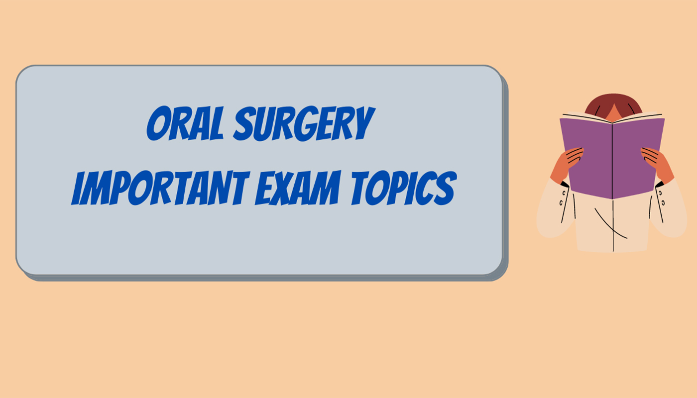

Oral Surgery Important Exam Questions
Hi everyone sharing with you important questions asked in previous year Oral Surgery examination in various universities. Hope these questions help you to know which topics are important. If you find these helpful please let me know in the comment box below. All the best in advance!!!
Long Questions
- Classify salivary gland tumors. Describe in detail about the clinical features of pleomorphic adenoma and its treatment.
- Classify the fractures of mid-face. Write in detail about the zygomatic complex fracture and its management.
- Write about the disease of maxillary antrum. Describe the different procedures for management of oroantral communication.
- Classify suture materials. Describe the basic principles of suturing.
- Describe the clinical features and management of trigeminal neuralgia.
- Write in detail about the inferior alveolar nerve block (pterygomandibular nerve block). Landmarks followed for the same nerve block, its complications & management.
- What is Fracture? Describe the clinical features and management of fracture of zygomatic complex.
- Define oroantral fistula. Describe the clinical features and management of oroantral fistula.
- Define complications of LA and their management.
- Define cyst. Write in detail the clinical features and management of periapical cyst in right upper central incisor.
- Classify condylar fractures of mandible and describe the modalities of treatment of the same.
- Describe the principles of use of antibiotics in oral and maxillofacial surgery.
- Describe the complication of tooth extraction and their management.
- Describe composition of local anaesthesia and write the role of each constituent.
- What is TMJ ankylosis? Describe the clinical features and management of left side TMJ ankylosis.
- Classify fracture mandible. Describe treatment of fracture of angle of mandible.
- Define local anesthesia, mention different types of classification of local anesthetics, Mention different theories of local anesthesia, explain in detail about specific receptor theory.
- Define impaction, classify mandibular third molar impactions according to Pell and Gregory. Mention various flap designs used for removing impacted mandibular 3rd molar, describe lingual split technique.
- Define ankylosis. Write various classifications of ankylosis, clinical features of bilateral ankylosis. Write in details about Kabans protocol.
- Classify fractures of middle third of facial skeleton. Mention clinical features and treatment for Lefort III fracture.
- Classify odontogenic tumors of mandible. How do you manage ameloblastoma involving the anterior border of mandible? Also write about clinical signs and symptoms of the lesion.
- Classify local anesthesia and describe in details theories of local anesthesia.
- What are fascial spaces? Describe in detail management of Ludwig’s angina.
- Classify fractures of zygomatic bone and describe in detail clinical feature and management of the same.
- Describe local and systemic complication of local anesthesia and their management.
- Classify cyst. Describe, clinical features and treatment of dentigerous cyst in ramus and angle region.
- Define Ludwig’s angina. Write the clinical features and treatment of Ludwig’s angina.
- Classify mandibular third molar impactions. Describe the surgical procedure for removal of impacted mandibular 3rd molar.
- Classify the diseases of maxillary sinus. Describe diagnosis and surgical procedure to treat a large Oroantral fistula.
- Define and classify fascial spaces. Describe the clinical features, complication and management of Ludwig’s angina.
- What are the diseases and conditions affecting the salivary glands? Write about the clinical features and treatment of pleomorphic adenoma.
- Classify mandibular fractures. Discuss about the types and treatment of angle fracture.
- Enumerate the properties of ideal LA drug. Describe the technique of giving an Inferior alveolar nerve block.
- Enumerate medical emergencies faced on the dental chair due to administration of local anesthetic agent. Briefly outline their management.
- Enumerate post extraction complications. Describe in detail the management of oroantral fistula.
- Write about indications, contraindications and complication of exodontia.
- Ideal properties and composition of local anesthesia and technique of pterygomandibular nerve block.
- Classify impacted 3rd molar and surgical procedures for trans-alveolar extraction of mesioangular impacted 3rd molar.
- Classify fractures of mandible and discuss the treatment of condylar fracture of mandible.
- Define ameloblastoma. Describe the histological variants, clinical features and management of ameloblastoma of the body of mandible.
- Define fracture. Discuss the clinical features and management of fracture of the angle of mandible in an adolescent male.
- Define Trigeminal neuralgia. Describe the manifestation, diagnosis and management of trigeminal neuralgia.
- Discuss the basic extraction forcep design. Add a note on trans-alveolar extraction and its complications.
- Write about the anatomical classification of mandibular fractures. Discuss favorable and unfavorable fractures in details.
- What is WAR line? Discuss about difficulty index in impacted 3rd molar tooth.
- Classify mandibular fractures. Describe in detail signs, symptoms, radiological features and management of bilateral condylar fractures and angle fracture.
Short Note
- Hemorrhage following extraction of tooth
- Sterilisation and asepsis
- Sialography
- Ranula
- TMJ ankylosis
- AIDS
- Oral Cancer
- Felypressin and Citanest
- Trismus
- Dental Implants
- Vestibuloplasty
- OKC
- Stages of GA
- Autoclaving
- Syncope
- Maxillary Canine impaction
- Anaphylaxis
- Dry Socket
- Odontoma
- Hemophilia
- Disinfection
- Osteoradionecrosis
- Pre-anaesthetic Medication
- Pleomorphic adenoma
- Principles of suturing, give 2 examples for absorbable & non-absorbable suture materials
- Branches of mandibular nerve, write in detail about lingual nerve
- Universal precautions for infection control
- Deans Alveoplasty, mention about Obwegeser’s modification
- OKC- radiological features, causes, recurrence and treatment
- Oroantral fistula. Clinical features of fresh oroantral communication, surgical management of established chronic oroantral fistula
- Diplopia
- Classification of elevators in oral surgery
- Syncope
- Principle of flap design
- Clinical features of TMJ ankylosis
- Haemophillia
- Stages of GA
- Oroantral communication
- Hepatitis-B
- FNAC
- Gillies Temporal approach
- Principles of elevators
- Trigeminal Neuralgia
- Mandibular condylar dislocation
- Impacted maxillary canine
- Stages of GA
- IANB
- FNAC
- Antibiotics prophylaxis for infective endocarditis
- Pericoronitis
- Ludwig’s angina
- Dental implants
- Genioplasty
- Enucleation
- Biopsy
- BSSO
- Pleomorphic adenoma
- Pterygomandibular space
- Osseo integration
- Carnoy’s solution
- Canine space infection
- Anterior Maxillary Osteotomy (AMO)
- CBCT
- Lefort I fracture and management
- Kelsy fry’s technique
- Genioplasty
- War lines
- Moist heat Sterilisation